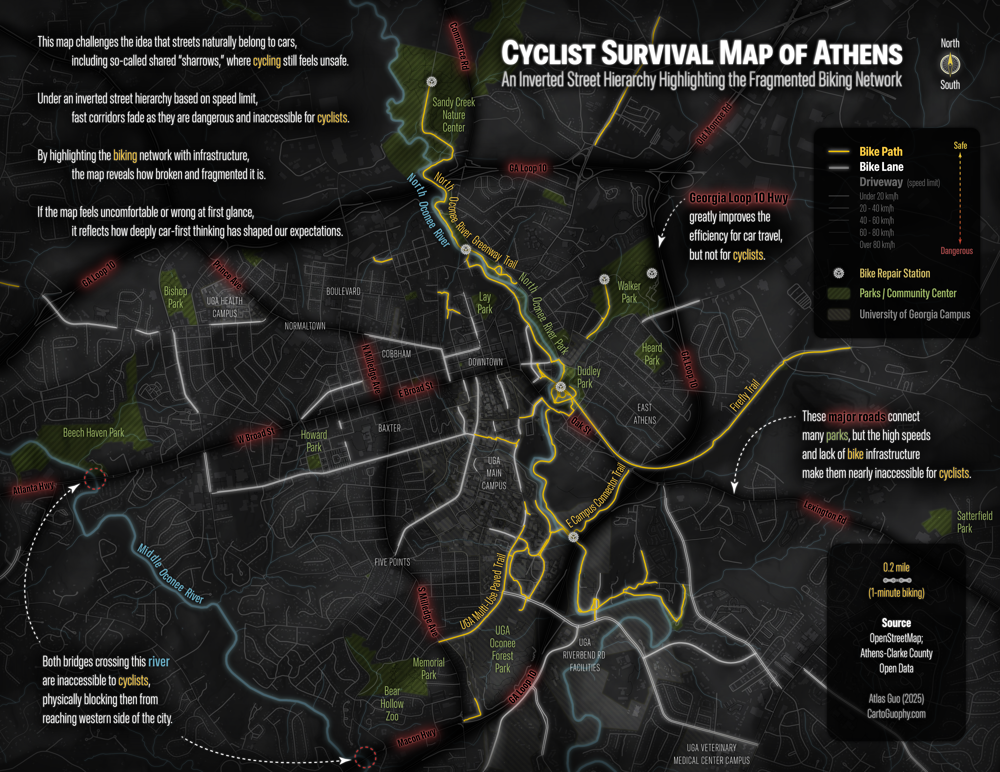

Cyclist Survival Map
This map is designed for desktop viewing.
Please open it on a laptop or desktop computer for the full experience.

Athens, Georgia
A different way of seeing the city — one road at a time, from the saddle.
Scroll to explore.
01 — Starting point
A conventional road map of Athens. Roads are ranked by traffic volume. Arterials dominate. Bike infrastructure is present but subdued — easy to miss, easy to ignore.
This is how most people see the city.
02 — Inversion
Flip the hierarchy. Roads are now rendered by how safe they feel on a bike — quiet, low-traffic streets glow brightest. Major arterials recede into darkness.
The city rearranges itself.
03 — Downtown
The spine of downtown Athens. High foot traffic, dense intersections, and no dedicated bike infrastructure make College Avenue one of the most stressful corridors for cyclists in the city.
Highlighted in amber — a caution, not a route.
04 — River crossings
The North Oconee River bisects the west side of Athens. Of the bridges that cross it, most lack safe accommodations for cyclists — no shoulder, no shared path, high-speed traffic.
Marked crossings are effectively inaccessible by bike.
05 — Southeast Athens
Southeast Athens holds several parks and greenways. A handful of quieter arterials thread between them — potential connectors that remain underused and underlit.
The network is there, waiting to be activated.
06 — Infrastructure
Strip away the roads. What remains is Athens's dedicated cycling infrastructure — shared-use paths in gold, painted bike lanes slightly dimmer.
Coverage is real but uneven. Large swaths of the city remain without any dedicated provision.
07 — Reading the map
Bright areas are where cyclists feel at home. Dark corridors are where they hold their breath. The contrast is not subtle — it is the everyday geography of risk.
Urban cycling infrastructure is not just about convenience. It is about who gets to move freely, and who does not.
08 — Comparison
Drag the divider to compare. Left: the conventional car-centered map. Right: the cyclist's map.
Same streets. Different stories.
09 — Print edition
A print-ready version of the cyclist survival map, designed for posting, sharing, and advocacy.
Download full map ↓{kind=link}